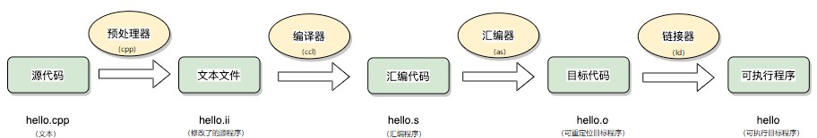
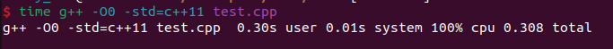
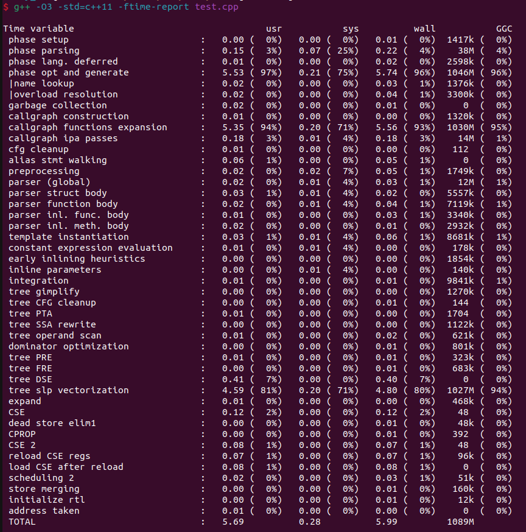
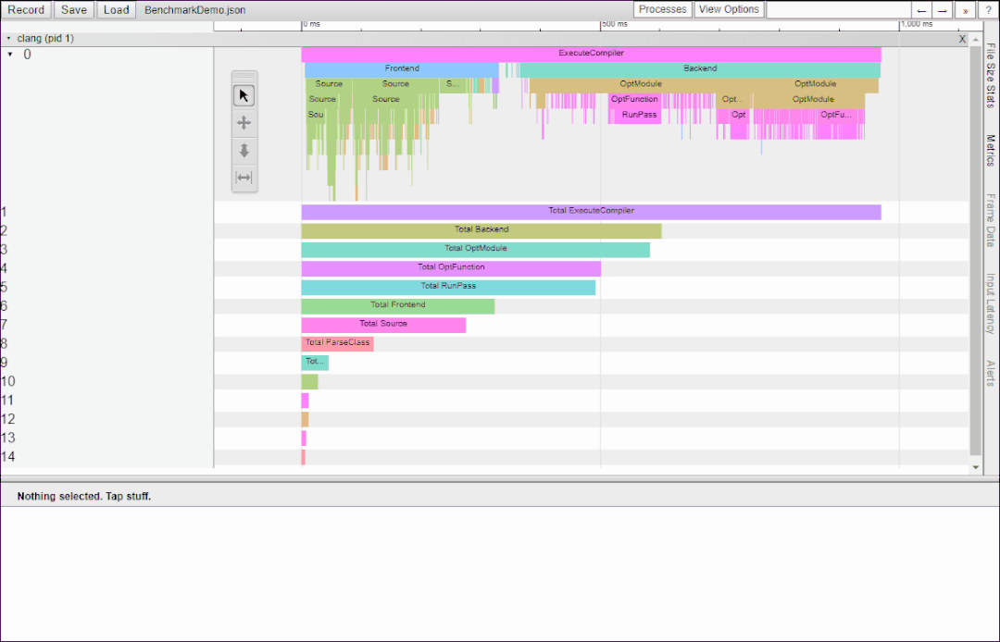
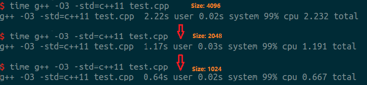
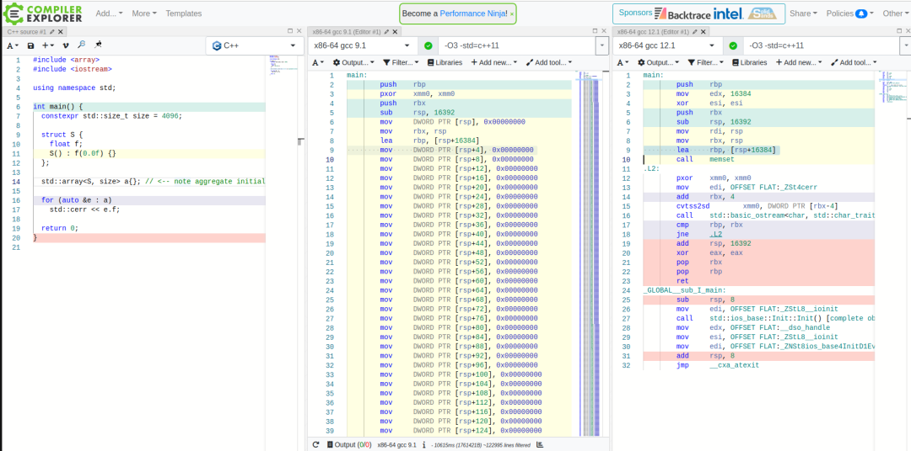
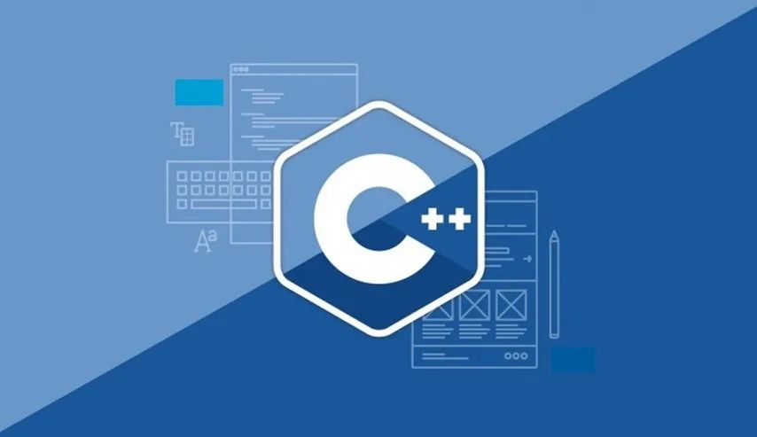

【转】谈谈编译期优化
【转】谈谈编译期优化
谈谈编译期优化
代码的维护是一个长期且持久的过程，而大型C++工程项目都会面临编译耗时较长的问题。不管是开发、测试，亦或是持续集成阶段，编译行为无处不在。降低编译时间对提高研发效率来说意义非凡。 文章来源:
项目优化一定要先明确目标，找准方向了再针对问题瓶颈 “对症下药”，而不要 “一味盲干”。要知道选择大于努力 :) 大多数 C++ 工程师在项目中除了完成既定任务以外，关于程序性能优化方面，考虑更多的主要还是集中在程序运行期的性能优化。
关于运行期的性能优化一般从 2 个维度解决：空间和时间。同时市面上也有很多工具帮助工程师检测程序性能，比如 google benchmark、profile、vtune 和 varigrand 等等。但这些都不在本章讨论的范围，本章重点关注程序的编译期优化。
可能会有人好奇，为啥要关心编译期优化？那不是简单一行命令或者点击一个 Run 的 button，剩下的都是 IDE 或者编译器该干的活么？但是随着新功能的增多，代码量的累积和几代人的传承，很难保证代码在短时间内能完成编译，有时一杯咖啡的时间都不够，可能需要等上几十分钟，甚至几个小时。可谓程序开发的痛点之一。谁都希望代码能跑得快，前提是能编得过，且编的快！
1. 项目代码的构建过程
要对构建进行优化，就需要熟悉项目的构建过程，才能有针对性地对其中的热点进行性能优化提升。而反观日常的开发过程中，代码的构建主要分为以下几个过程：
拉取代码（1） -> 执行编译（2） -> 打包上传（3） -> CI 编译&自动化测试（4） -> 合入代码库（5）
上述的几个过程中，我们能做的优化工作大部分集中于（2）和（4）。
2. 面对的困境
从开发者角度来看：
- C++ 编译过程本来就很慢
- 随着项⽬规模的增⻓，构建耗时越来越⻓
从 CI 角度来看：
- 非增量（全量）编译会导致每次都需要编译所有的组件或模块
- 模块间过多的依赖和线性的编译顺序导致构建时间过长
- 用于构建的机器资源不⾜将导致构建任务需要排队等待
- 如果构建失败，将重排构建队列，重新多次进入队列会极⼤影响⼯作的节奏
3. 构建优化的收益
- 缩短等待时间意味着减少无效等待时间，进而提升研发效率
- 快速高效构建的⼯作可以降低硬件成本
4. 代码编译过程
程序分为编译期和运行期。对于 C++ 程序来说，编译期分为以下几个阶段：
预编译处理 -> 编译 -> 汇编 -> 链接
以一个简单的程序 hello.cpp 为例。

// hello.cpp
#include <iostream>
using namespace std;
int main() {
cout << "hello world !" << endl;
return 0;
}
C/C++ 语言编写程序转换成处理器能够执行的二进制代码的过程，包括以下 4 个步骤：
预处理 (Preprocessing)
预处理的过程包括：
[1] 将所有的 #define 删除，并展开所有的宏定义，同时处理所有有的条件预编译指令，比如 #if、#ifdef、#elif、#else、#endif 等。
[2] 处理 #include 预编译指令，将被包含的文件插入到该预编译指令的位置。
[3] 删除所有注释 “//” 和 “/* */”。
[4] 添加行号和文件标识，以便编译时产生调试用的行号和编译错误警告行号。
[5] 保留所有 #pragma 编译器指令，因为后续过程需要使用。
使用 GCC 进行预处理的命令如下：
(GCC 的选项
-E将源文件 hello_world.cpp 预处理生成 hello.i)
g++ -E hello.cpp -o hello.i
编译（Compilation）
编译过程就是对预处理完的文件进行词法分析、语法分析、语义分析以及优化后生成相应的汇编代码。
使用 GCC 进行编译的命令如下：
(GCC 的选项
-S将预处理生成的文件 hello.i 编译生成汇编程序 hello.s)
g++ -S hello.i -o hello.s
汇编（Assembly）
汇编过程对汇编代码进行处理，生成处理器能识别的指令，保存在后缀为 .o 的目标文件中。
当程序由多个源代码文件构成，每个文件（编译单元）都要先完成汇编工作，生成 .o 的目标文件后，才能进行下一步链接。其中的目标文件已经是最终程序的一部分，但在完成链接前还不能执行。
使用 GCC 进行汇编的命令如下：
(GCC 的选项
-c将编译生成的文件 hello.s 汇编生成目标文件 hello.o)
g++ -c hello.s -o hello.o
注意：目标文件 hello.o 为 ELF(Executable and Linkable Formate) 格式的可重定向文件。
链接（Linking）
链接也分为静态链接和动态链接，定义如下：
静态链接
静态链接是指在编译阶段直接把静态库加入到可执行文件中去，因此可执行文件会比较大。链接器将函数的代码从其所在地（不同的目标文件或静态链接库中）拷贝到最终的可执行程序中。运行时也就不再需要静态库文件，其后缀名一般为“.a”。 为创建可执行文件，链接器必须要完成的主要任务是：符号解析（把目标文件中符号的定义和引用关联起来）和重定位（把符号定义和内存地址对应起来，然后修改所有对符号的引用）。
动态链接
动态链接是指在链接阶段仅仅只加入一些描述信息，程序执行时，再从系统中把动态库加载到内存中去。动态库一般后缀名为“.so”。
Tips：在Linux系统中，可以用 ldd 命令查看一个可执行程序依赖的共享库。
链接器链接后生成的最终文件为 ELF 格式的可执行文件，一个 ELF 格式的可执行文件通常会在链接时分为不同的段，常见的段如 .text、.data、.rodata、.bss 等。
5. 编译器优化选项
编译器优化级别大体如下：
- O0（默认选项）：不开启优化，方便功能调试
- Og：方便调试的优化选项（比 `O1` 更保守）
- O1：保守的优化选项，打开了四十多个优化选项
- O2：常用的发布优化选项，在 `O1` 的基础上额外打开了四十多个优化选项，包括自动内联等规则
- Os：产生较小代码体积的优化选项（比 `O2` 更保守）
- O3：较为激进的优化选项（对错误编码容忍度最低），在 `O2` 的基础上额外打开了十多个优化选项
- Ofast：打开可导致不符合IEEE浮点数等标准的性能优化选项。
当没有开启优化时，编译器一般会按代码来生成二进制代码，以方便调试。一旦打开优化，取决于不同的优化选项，编译器可以对代码进行各种不同的变形，以减少时间（空间）开销。
一般来说， 通常要使用 GDB 调试 C/C++ 的程序，首先在编译时，我们必须要把调试信息加到可执行文件中。使用编译器的 -g 参数可以做到这一点，比如：
g++ -g hello_world.cpp -o hello
加上 -g 选项以后，GCC 在编译时会完成以下操作：
- 创建符号表，符号表包含了程序中使用的变量名称的列表。
- 关闭所有的优化机制，以便程序执行过程中严格按照原来的 C++ 代码进行。
如果没有 -g，你将看不见程序的函数名、变量名，所代替的全是运行时的内存地址。
对于日常项目中，由于工具链中已经对编译器优化做了配置，所以大多数情况下，我们只需要关注 `O2`、`O0` 和 -g 就可以了，这里只是做个简单的补充。
编译期优化的常见思路
之所以要在考量 runtime 性能瓶颈之余，还要关注编译期的性能优化，是因为在实际项目中，CI 发现项目中的一个模块在 GCC 的 `dbg` 模式下的编译时间长达 40 分钟，以至于引发编译 timeout 的问题，这个问题直接阻塞了其他模块的正常编译。于是 CI 组小伙伴发来友情问候，热情邀请参与调查其中原因，所以后续故事就此展开。
1.找热点（hotpoint）
方法很简单，首先编译各个模块，对比在 dbg 模式和 opt 模式下构建的消耗时长，找到问题模块。其中需要对每个模块多次编译，对其时长求平均和最大值，并以柱状图显示（方便可视化对比）。笔者的开发环境是 Linux，编译器主要是 GCC 和 Clang。
这个过程比较耗时，需要逐个模块编译和对比编译耗时。如果可以的话，建议可以将该过程做成 pipeline，可以以图标的形式自动化地展示编译耗时，也方便以后对构建过程进行监测。
2.聚焦热点
通过上一步的编译和比较，找到了最耗时的模块。既然找到了症结所在，那么剩下的工作就相对容易了。于是聚焦热点，同时搜罗市面上的工具，进一步展开细化分析。
GCC
GCC 在编译耗时方面的工具并不多，一般只是简单统计编译的时长。常用的主要有 time 和 -ftime-report，（以文件 test.cpp 为例）即
$ time g++ -O3 -std=c++11 test.cpp
运行结果如下： 
$ g++ -O3 -std=c++11 -ftime-report test.cpp
运行结果如下： 
Clang
相比 GCC，Clang 在这方面的工具要便捷得多，可以细化到具体函数和类的编译耗时，常用的工具有 -ftime-trace。
下面指令编译完成之后，会生成对应文件的 *.json 文件。
$ clang++-11 -c -ftime-trace -std=c++11 -O3 test.cpp
在 chrome 地址栏中敲入 chrome://tracing，加载之前编译的 json 文件，效果如下

3.重现问题
经过上面 2 步，大致可以定位问题了，一般流程是先用 GCC 的工具编译有个直观大致感觉，然后使用 Clang 的根据具体分析对应的代码。我们可以发现引发编译耗时的问题代码如下：
（因为保密因素，这里的问题代码仅仅是脱敏和简化后的问题代码）
// test.cpp
#include <array>
#include <iostream>
int main()
{
constexpr std::size_t size = 4096;
struct S
{
float f;
S() : f(0.0f) {}
};
std::array<S, size> a{}; // <-- note aggregate initialization
for (auto& e : a)
std::cerr << e.f;
return 0;
}
其他影响因素
容器大小
除了上述的一些原因以外，容器的 `size` 大小也会对最终的编译时长有影响，下面的是不同 `size` 大小情况下对比
Size : 4096 → 2048 → 1024 (Linear Growth)

工具链因素
同时，我们也发现在不同的 GCC 版本下，同样的代码的编译耗时也不一样，GCC12.0 上的代码编译就比 GCC9.0 的要快得多。
4.问题根因
经过调研后我们知道，这个问题是由于上述代码中的 array 在初始化发生的，而究其根因是因为 {} 的存在，会促使编译器进行聚合初始化（aggregate initialization）,关于聚合初始化的细节这里就不作赘述，感兴趣的同学可以参考链接 https://en.cppreference.com/w/cpp/language/aggregate_initialization，或自行搜索关键词。
同时，这个关于聚合初始化的问题，GCC12.0 已经修复这个问题。这也就是为什么 GCC12.0 的编译速度比 GCC 9.0 要快的原因 Compiler Explorer 上代码编译的对比结果如下，可以明显看到 GCC12.0 编译后的代码量要精简很多，去除了 GCC 9.0 里大量重复的寄存器值的复制和搬移 mov DWORD PTR [rsp+4], 0x00000000。

5.解决方案
既然知道了原因，关于这个问题的相应的解决方案如下：
减小容器的规模
容器的规模在初始化时候的表现是线性增长，解决途径就是
- 减小容器的规模（4096 -> 1024）
- 考虑更换可动态增长容器，将上述的 `array` 换成诸如 `vector
升级编译工具
GCC12.0 已经解决此类问题，如果可以的话，考虑升级编译工具，一劳永逸。
避免聚合初始化
如果前面的 2 个方案都被否定的情况下，考虑在 GCC9.0 环境下使用修改代码的方式解决问题。 上述的代码修改如下（这里只做简单演示，不做安全性和鲁棒性考虑）：
#include <array>
#include <iostream>
int main()
{
constexpr std::size_t size = 4096;
struct S
{
float f;
S() : f(0.0f) {}
};
struct Collections
{
Collections() : a() {}
std::array<S, size> a; // <-- note none-aggregate initialization
};
Collections c;
for (auto& e : c.a)
std::cerr << e.f;
return 0;
}
6.编译优化最佳实践
好了，经过一番折腾上述的问题也告一段落。那么，对于工程师来说，日常的开发过程中有编译期优化有什么最佳实践呢？我稍微整理了一下，现在分享给大家。

只引入必要的头文件
- 清理重复include 为了避免 include 多余的头文件导致预编译后源代码膨胀，增加编译时间。 针对 C/C++ 的工程，谷歌开源了一个工具 IWYU (https://github.com/include-what-you-use/include-what-you-use)，可以项目中帮助检查，只 **include **必要的头文件。
- 使用前向声明代替 include 针对复杂头文件，可以通过前向声明(forward declaration) (https://en.wikipedia.org/wiki/Forward_declaration)数据类型，避免直接 #include 类型定义的头文件。
- 预编译头文件（PCH） 要使用预编译头，必须指定一个头文件，这个头文件包含不会经常改变的代���和其他的头文件，用一个 .cpp 包含它并编译生成一个 .pch 文件，在接下来编译到需要 include 这个头文件的代码时，就直接使用预编译头文件，速度的提升明显。 这些预先编译好的代码可以是任何的 C/C++ 代码，甚至是 inline 函数，但前提是这些代码必须是稳定的，即在开发过程中不会被经常改变的。如果这些代码被修改，则需要重新编译生成新的预编译头文件。
拆分 lib
正如 Catch2 里一旦定义了 CATCH_CONFIG_MAIN 编译速度会大大减慢一样，把什么东西都放一起最终证明对编译速度还是相当不利的。所以相关的实践如下：
- 去除多余的依赖关系 拆分出公共模块，剔除不必要的依赖关系。每个 lib 的大小和规模，需要根据实际情况权衡。
- 避免 cpp ⽂件被多个项⽬包含和重复编译 同上，当拆分出独立的 lib 以后，就不存在同一个 cpp 被重复包含和编译的情况了。因为这会消耗过多的编译资源。
- 各模块单独进⾏版本管理、构建和发布 拆分出的 lib 单独版本管理的好处是，不用每次编译所有模块，模块就可以通过动态链接或者静态链接已经并发布的 lib 文件，各 lib 之间仅依赖发布版本。 （C++ 20 的 Module，可以很好解决 lib 现有的问题，更好地管理好模块之间的依赖关系）
编译任务编排
-
对于 C/C++ 项目来说，编译阶段可以同时启动多个进程，并行处理；但链接阶段只能在所有目标文件生成结束后，进行串行处理。所以识别并发任务并进行编排就显得尤为重要。
-
提高编译并发度，尽早开始瓶颈项⽬的构建，以便减少过多依赖等待和减轻瓶颈效应。甚⾄可考虑将⼤项⽬拆解，以并发构建这些拆解出的⼩项⽬
-
避免 IO 密集型任务过度并发，使 CPU ⽆法跑满
-
尽量让 IO 密集型任务与 CPU 密集型任务重叠执⾏
-
提⾼预处理过程过程的并发度
优化模板实例化
谨慎使用复杂 template 库，因为模板的实例化过程本身也会很耗时，虽然标准库在这方面也一直在努力。 比如头文件中有 std::vector，则该模板在每个 cpp 文件中使用时都会做一次实例化，N 个源文件中的就会实例化 N 次。
编码角度 - 针对接口编程
使用 Pimpl 模式实现声明与实现分离。其中，接口定义要相对稳定，只 include 接口头文件。
Pimpl（Pointer to Implementor），顾名思义就是将真正的实现细节的 Implementor 从类定义的头文件中分离出去，公有类通过一个私有指针指向隐藏的实现类，是促进接口和实现分离的重要机制。
通常的 Pimpl 的手法是在 API 的头文件中提供接口类的定义以及实现类的前置声明，实现类的本身定义和成员函数的实现都隐藏在 CPP 文件中去，同时为了避免实现类的符号污染外部名字空间，实现类大多作为接口类的内部嵌套类的形式。
清理代码
- 清理无用代码 项目规模随着业务的增长，代码量也会膨胀，必然也会存在一些无用的代码和模块。
- 清理重复代码 重复、冗余的代码，考虑精简，重构后抽离出公共的部分（类或函数）。
优化编译、链接选项
- 减少输出
- 增量编译
- 构建结果复用
升级工具链
- 使用编译加速工具，比如：ccache、UB、clang、IB
- Visual studio 和 make 都支持并行编译
- 使用分布式编译工具，如 IncrediBuild
增加硬件投入/升级硬件（非必选）
更⾼主频，更多的核，更⼤的内存，更快的磁盘（SSD）和⽹络更⾼性能的构建机集群
Tips：在项目的某个阶段和一定规模的时候，稍微增加⼀点硬件成本，是可以换来整体研发效率上的提升！但是，这并不是长远之计。毕竟 “Free launch is Over”。在达到一定量级以后，更应该关注的代码本身，从代码质量和效率上发力。
使用 C++20 Module 特性（非必选）
不是所有公司的项目都在用 C++20，在笔者发文的时候，市面上还没有很好的编译器支持 Module 特性。并且鉴于 C/C++ 项目大多都有些年头，故非比选。
其他
- 关闭防⽕墙之类后台服务（极⼤影响 IO 性能）
- 找出瓶颈项⽬，针对性优化
- 拉取代码、打包上传等环节 （⾮编译环节）
[1] 使用 Git shallow clone 浅克隆（–depth） [2] 检查冗余文件、代码等数据的上传和下载 [3] 检查是否执⾏了多余的命令
7.小结
代码的维护是一个持久的过程，而大型C++工程项目都会面临编译耗时较长的问题。不管是开发、测试，亦或是持续集成阶段，编译行为无处不在。降低编译时间对提高研发效率来说意义非凡。 项目优化一定要先明确目标，找准方向了再针对问题瓶颈 “对症下药”，而不要 “一味盲干”。要知道选择大于努力 希望本文对大家能有所帮助，亦或有所启发。
参考
- https://stackoverflow.com/questions/37260097/stdarray-with-aggregate-initialization-on-g-generates-huge-code
- https://en.cppreference.com/w/cpp/language/translation_phases
- https://aras-p.info/blog/2019/01/12/Investigating-compile-times-and-Clang-ftime-report
- https://aras-p.info/blog/2019/01/16/time-trace-timeline-flame-chart-profiler-for-Clang
- https://www.snsystems.com/technology/tech-blog/clang-time-trace-feature
- https://github.com/alex-che/gcc-phases
- https://github.com/mikael-s-persson/templight
- https://github.com/royjacobson/externis
- https://github.com/aras-p/ClangBuildAnalyzer
- https://gcc.gnu.org/onlinedocs/gcc/Precompiled-Headers.html